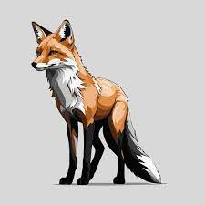

Šta su rasterske grafike?
Rasterske grafike (bitmap) se sastoje od piksela, gde je svaki piksel definisan bojom. Najčešće se koriste za fotografije i slike sa mnogo detalja. Glavne karakteristike su:
- Rezolucija je fiksna - povećanje može uzrokovati gubitak kvaliteta.
- Primeri formata: JPEG, PNG, GIF.
- Idealne za realistične slike i fotografije.


Šta su vektorske grafike?
Vektorske grafike se sastoje od matematičkih formula koje definišu linije, oblike i krive. Njihove glavne karakteristike uključuju:
- Skalabilnost - povećanje ne utiče na kvalitet.
- Primeri formata: SVG, EPS, AI.
- Idealne za logotipe, ikone i ilustracije.
Tabela poređenja
| Karakteristika | Rasterska grafika | Vektorska grafika |
|---|---|---|
| Struktura | Pikseli | Matematičke formule |
| Rezolucija | Fiksna | Neograničena |
| Idealan za | Fotografije | Logotipe i ilustracije |
| Formati | JPEG, PNG, GIF | SVG, EPS, AI |